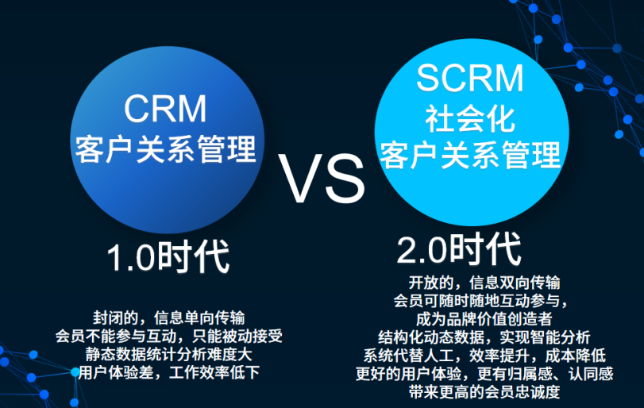

scrm是社交客户关系管理系统，在传统的crm系统上增加了客户互动链接的能力。依托与企微生态，员工可以直接与客户添加好友，并进行单聊、群聊及朋友圈的互动，而基于企业微信的scrm系统，在企微能力的基数上，有了更多客户信息记录、客户互动营销的能力，利用企的高链接高触达与scrm的软件能力，实现客户经营服务。
在移动互联网生态成熟的今天，任何品牌的客户都是分散在线上线下各个场景，全域scrm指的是，将分散的客户数据进行打通，将各个渠道的客户触点引流到企业微信上。实现品牌全渠道客户引流、客户数据全域集成的社交客户关系管理系统。有了全渠道数据通的加持，全域scrm系统能更好的为品牌实现私域客户经营。

全域scrm系统更加适合消费者行业，用企微去链接客户与服务客户。在功能特点上，分为五个步骤，分别为：全域引流、私域互动、营销复购、数据驱动。其中全域引流指的是利用活码与短链功能将品牌各个渠道的客户引流添加企微员工，并自动打上渠道标签。当用户添加企业微信的同事，系统会自动采集并在用户详情中呈现顾客在品牌所有渠道的客户信息与订单记录。而私域互动则是利用企微的聊天互动能力，结合scrm系统的sop运营、聊天侧边栏、智能物料、客户分组等功能。在私域与客户构建信任后，利用群裂变、小程序营销等体系进行私域裂变，让私域客户经营反哺业绩增长，最终，以可视化的数据展示社群、私域增长、私域营收等数据，助力企业运营决策。
scrm的应用分为 “工具型、销售型与运营型”三种类型，其中运营型的全域scrm系统，主要适合消费者行业，其中包含宠物、零售、快消品、教育、医美餐饮等行业。全域scrm在打通全渠道数据的前提下，企业利用好企业微信的互动能力，以数字化的技术实现客户经营，从而带来品牌的私域增长。
积木云策是一站式数字化客户经营解决方案服务商，通过帮助消费者行业构建全域客户数据中台，为企业提供全域数据集成、消费者洞察、私域经营、自动化营销等能力，助力品牌用数字化技术，精细化运营。